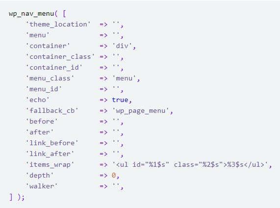

Если мы зайдем в WP в раздел "внешний вид", то увидим, что там нет подраздела "Меню". Для того что бы оно там появилось, нам надо зарегистрировать это самое меню, а так же указать для него "область".
Для начала в файле function.php надо добавить новое действие (action) after_setup_theme. Это хук-событие, к которому мы прицепимся для создания нашего меню. Во время этого события мы будем вызывать нашу функцию (myMenu - название произвольное), которая будет объявлять область для нашего меню.
Итак, открываем файл function.php и добавляем туда строку:
Затем объявляем нашу функцию myMenu()
В теле нашей функции помещаем следующий код:
Теперь если вернуться в консоль WP и перезагрузить ее, то в разделе "Внешний вид" появится подраздел "Меню"
Переходим в консоли "Внешний вид" - "Меню"
Здесь указываем название нашего меню и жмем кнопку "Создать меню"
После того как меню создасться, появится вкладка "Управление областями"
Здесь отобразится наша область, которую мы создали в файле function.php ('верхнее меню'). Теперь в управлении областями мы можем привязать к нашей области наше только что созданное меню
После выбора области, жмем "Сохранить изменения".
В файле header.php ищем тег <nav> (ну или ту область где в верстке помещена наша навигация). В этом разделе нам надо поместить следующий код:
Функция wp_nav_menu() отображает меню, которое было создано в WP. Входящим параметром этой функции является ассоциативный массив, который регулирует настройки отображения меню. Вот как выглядит этот массив:
Дополнительно об элементах массива можно почитать здесь. Мы же рассмотрим только некоторые из них.
Вот как это будет выглядеть:
Если теперь наш сайт, после добавления навигации через WP, перекособочило, у нас только один выход, это править файл CSS что бы все отображалось корректно.
Для добавления элементов меню в консоли заходим в раздел "Страницы", и создаем там страницу, даем ей имя и какой-нибудь содержание. Затем создаем еще одну страницу и во время создания в "Атрибутах страницы" в разделе "Родительская страница" из выпадающего списка выбираем нашу первую страницу. Т.е. наша вторая страница будет дочерней для первой.
После этого идем в настройки нашего меню (Внешний вид - Меню) и добавляем атрибуты нашего меню.
Якорная ссылка это - такая ссылка которая ведет не на отдельную страницу, а на определенный раздел текущей страницы.
Для добавления такого пункта меню, мы в настройках меню добавляет атрибут типа "Произвольная ссылка. В поле URL указываем метку через '#' (решетку)